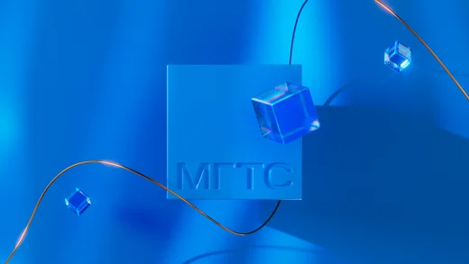
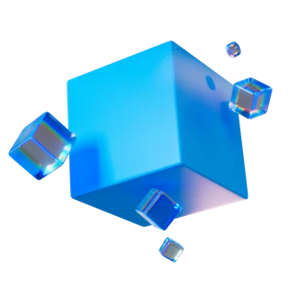
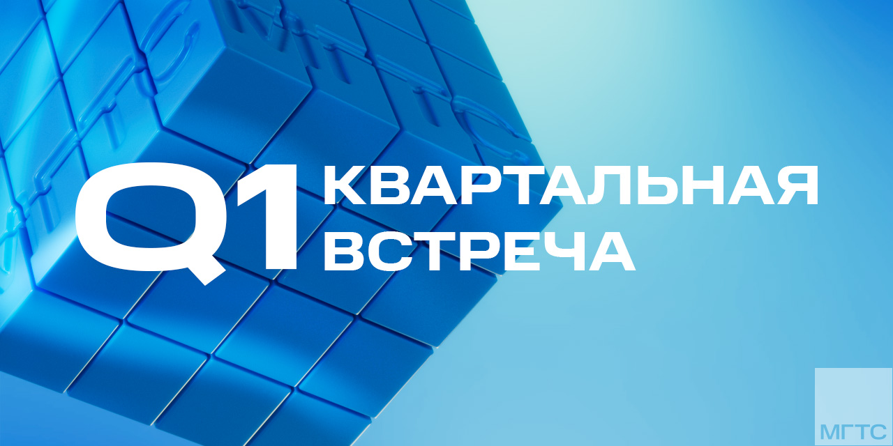
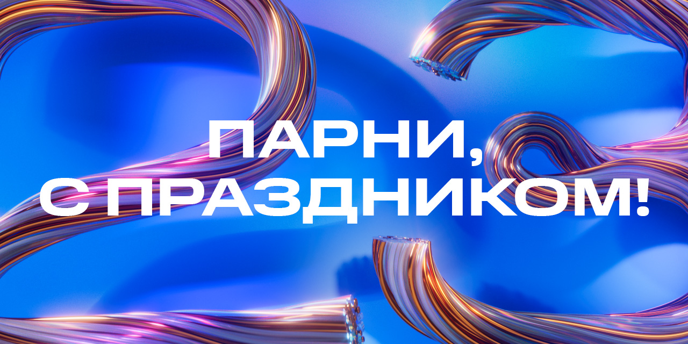
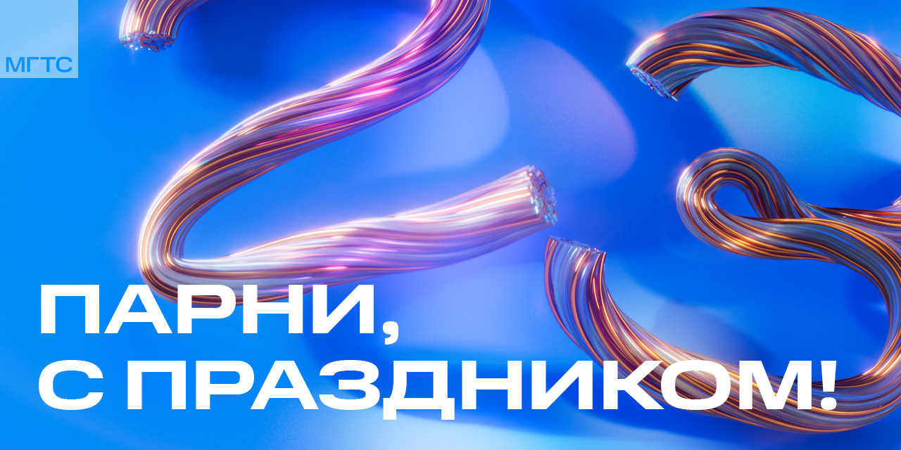
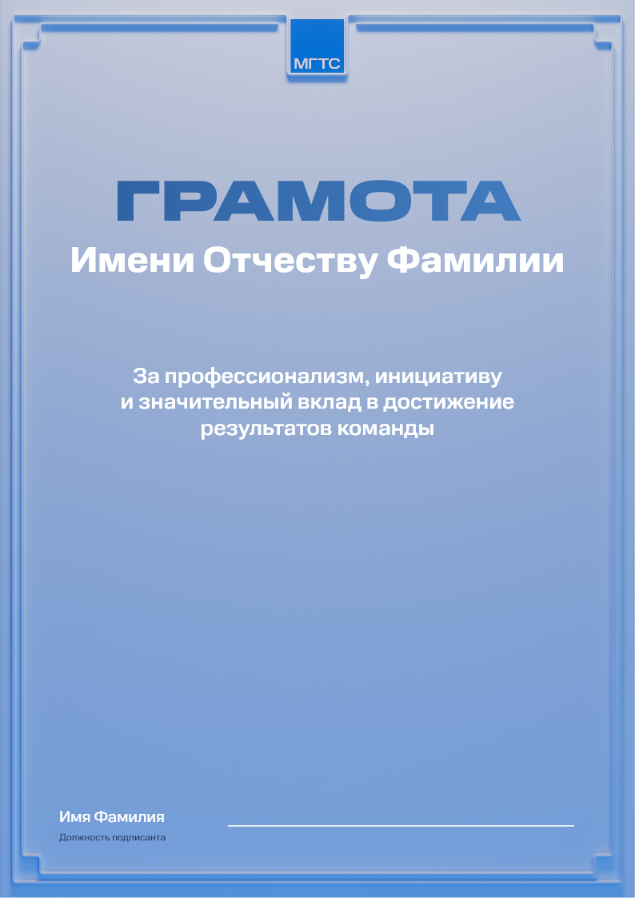
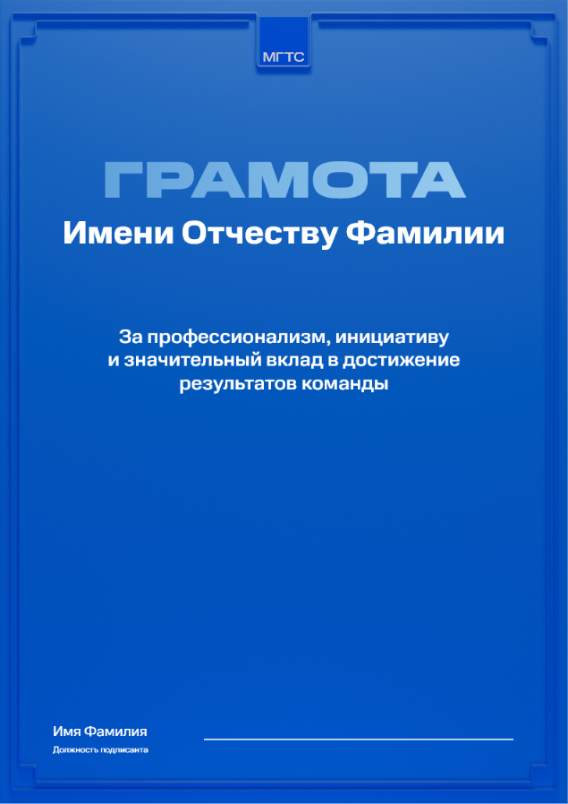

Установите шрифты
Скачайте OTF из раздела «Шрифт». Установите их до открытия PowerPoint и при необходимости перезапустите приложение.
Внутренние коммуникации · 2026
Как оформлять внутренние презентации, рассылки, публикации и грамоты. Правила, примеры и исходники для коллег и подрядчиков.

Фирменная графика из набора фоновНачало работы
Скачайте OTF из раздела «Шрифт». Установите их до открытия PowerPoint и при необходимости перезапустите приложение.
Откройте копию PPTX. Найдите подходящий пример в шаблоне, продублируйте слайд и замените содержимое.
Запустите показ слайдов. Проверьте переносы, контраст и читаемость подписей. Если получателю нужна версия для просмотра, экспортируйте PDF.
Руководство опирается на шаблон внутренних презентаций МГТС 2026 года и примеры рассылок и публикаций. Для рекламных, печатных и партнёрских носителей запросите требования к конкретному формату у заказчика МГТС.
Выбирайте исходный SVG для масштабирования и PNG для приложений, где нужен растр. Используйте голубой или графитовый вариант на светлом фоне, белый — на тёмном. В версиях с прозрачными вырезами через надпись и свободные области виден фон, поэтому проверьте контраст на готовом макете.


#57A5D7 · RGB 87 / 165 / 215
По приложенной спецификации · PANTONE P 112-5 U, CMYK 63 / 21 / 2 / 0.
Размещайте на спокойном фоне
Сохраняйте пропорции и цвета исходного знака. Оставляйте свободное пространство вокруг, чтобы рамка и надпись читались.
Исключите искажения
Избегайте растяжения, обрезки, перекраски, обводок и теней. Для обложки с кубом используйте готовую 3D-композицию из каталога.
Численные требования к охранному полю, минимальному размеру и совместному размещению с логотипом партнёра согласуйте с заказчиком МГТС.
Начинайте со светлого фона. Синий задаёт иерархию, тёмно-синий обеспечивает читаемость, оранжевый выделяет одну деталь.
#FFFFFFRGB 255 / 255 / 255Базовый фон.
#008AE0RGB 0 / 138 / 224Заголовки, перебивки, основной акцент.
#134074RGB 19 / 64 / 116Основной текст на светлом фоне.
#FF7654RGB 255 / 118 / 84Дополнительный акцент, например маркер.
Для мелкого текста используйте тёмно-синий на белом. Для светлого заголовка на 3D-фоне выбирайте спокойную тёмную область и проверяйте результат в режиме показа. Цвет знака #57A5D7 задан в исходных логотипах. Для элементов слайда используйте палитру темы выше. Остальные цвета темы PowerPoint переносите из подходящего примера, например из готовой диаграммы.
Источник · слайд 7 и таблица цветов темы PPTX
Размеры приведены в пунктах PowerPoint по конкретным примерам. При создании слайда сохраните стили выбранного макета.
Для обычного текста используйте MTS Text, для подзаголовков и подписи к показателю выбирайте начертание из макета. Заголовок, подзаголовок и основной текст должны заметно отличаться по размеру или насыщенности.
Источник · слайды 4, 15 и архив шрифтов
Формат шаблона PowerPoint — 16:9. Для новых композиций используйте сетку исходного файла. Совмещайте края текстовых блоков, карточек и изображений с её линиями.
Оставляйте пространство для длинного заголовка, подписей и колонтитула. Если нужен номер слайда, возьмите пагинатор из шаблона и сохраните его пропорции.
Короткое название на крупном фоне. Перебивка открывает новый раздел.
Слайды 1–2 и 8Крупные числа, короткие подписи и единицы измерения.
Слайды 15–16Краткое описание и главный вывод.

Разместите пояснение и графику в отдельных зонах. Карточки подойдут для равнозначных тезисов.
Слайды 17–19 и 22–25Схемы на странице иллюстрируют приёмы шаблона. Редактируемые макеты находятся в PPTX. Сетка, колонтитулы и пагинатор показаны на слайдах 3–6.
Для обложек и перебивок выбирайте фоны со спокойной зоной под текст. В содержательных слайдах используйте отдельный 3D-объект или иконку как опору для одного тезиса. Сохраняйте пропорции и прозрачность исходного PNG.
Уместно
Графика поддерживает мысль, а заголовок и подписи видны при показе.
Избегайте
Растянутых объектов, текста поверх ярких бликов и нескольких конкурирующих иллюстраций.
Для сравнения категорий используйте столбцы, для динамики — график, для простого состава — круговую диаграмму. Выделяйте одно главное значение. Оставляйте оси, легенду и подписи, необходимые для чтения.
Слайды 46–61
Расположите события в хронологическом порядке. Подпишите периоды и вынесите пояснения к ключевым датам. Отметьте текущий этап, если от него зависит вывод.
Слайды 39–41
Укажите период и единицы измерения. Выровняйте числа по правому краю и сохраните один формат внутри колонки. Для сравнения выделите итоговую строку или ключевой столбец.
Слайды 62–64
В примерах повторяются насыщенный синий фон, крупный белый заголовок, тематический 3D-объект и медная или оранжевая деталь. Для серии сохраняйте узнаваемый объект и заголовок, как в «Открытом разговоре», а иллюстрацию и подзаголовок адаптируйте к конкретному сообщению.
В большинстве примеров шапка 1280 × 640 px. Размещайте тему на баннере, а дату, условия и ссылку — текстом в письме. Проверьте, что письмо понятно с отключёнными картинками.
В примерах используется широкий баннер 1720 × 547 px. Поставьте заголовок и основной объект рядом. Перед публикацией проверьте, что при обрезке в ленте остаются видны заголовок и знак.
В примерах используется формат 720 × 720 px. Выстройте заголовок и объект по вертикали. Проверьте читаемость на ширине мобильной ленты.
В «Центре здоровья» стетоскоп остаётся главным образом. В квадрате он расположен под заголовком, в «Пульсе» смещён вправо. Квадратный знак обычно занимает свободный угол. Сверяйте его видимость после кадрирования.
Размеры приведены по исходным JPG. Перед экспортом уточните требования конкретного канала. Даты, расписания и инструкции продублируйте в тексте публикации.
Нажмите на изображение, чтобы открыть оригинал, или скачайте JPG.









Два шаблона PowerPoint формата А4 (210 × 297 мм, книжная ориентация). Оба повторяют композицию референса с логотипом в верхней части, именем награждаемого по центру и местом для подписи внизу.


Исходная презентация с макетами, сеткой и примерами.
Скачать PPTX ↓Пять семейств, 21 начертание OTF.
Перейти к шрифтам ↑Фоны (70) и иконки (79). В каталоге можно скачать каждый оригинал. Логотипы доступны в SVG и PNG, примеры рассылок — в JPG.
Каталог графики ↑index.html в браузере.mgts-brandbook целиком в каталог статических файлов и откройте index.html по адресу этого каталога. Страница работает с относительными ссылками, без внешних сервисов и сборки.Комплект собран из PPTX «шаблон внутренней презентации МГТС 2026 (correct fonts 2)», ICONS.tar, FONTS.tar папки Slides BGs файлов логотипа МГТС 33 примеров рассылок и публикаций, а также референса и фонов для грамот. Скачать архив IMGs.tar из папки фонов ↓ · ICONS.tar ↓ · FONTS.tar ↓